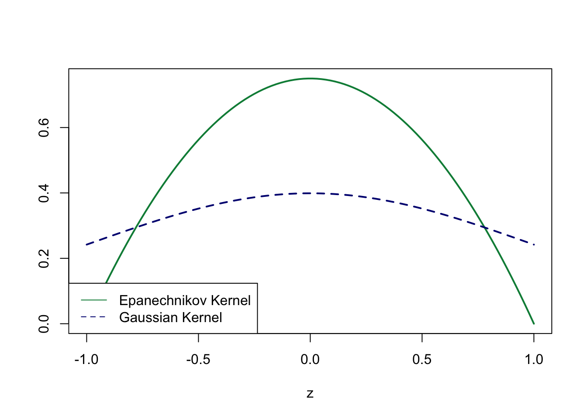
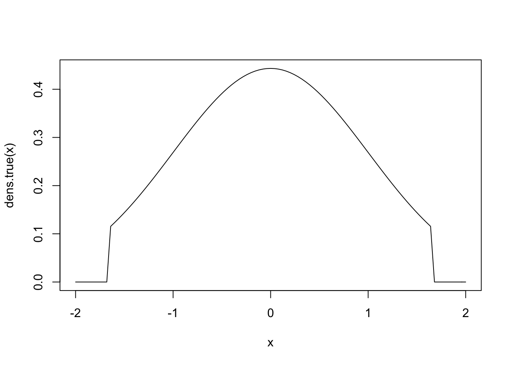
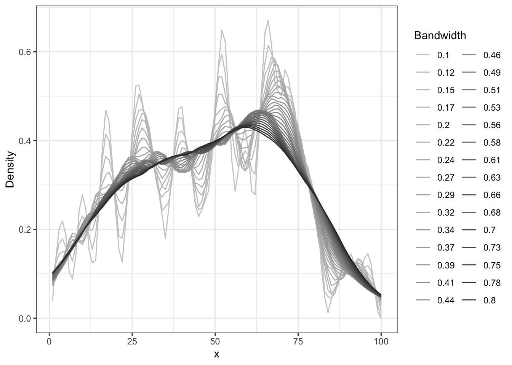

Chapter 14 Problem Set 4: NP-Density estimation
14.1 Generate a sample of 100 points from a distribution of your choice and program (by hand) the kernel density estimator
\[\hat{f}(x)=\frac{1}{nh}\sum_{i=1}^nK\left(\frac{x-X_i}{h} \right)\] using the Epanechnikov Kernel below and plot the resulting function estimate.
\[K(x)=\frac{3}{4}\left(1-|x|^2 \right)\mathbf{1}(|x|\leq 1)\]
#Nonparametric Density Estimation#
#We define the functions used for the Kernel function#
# Gaussian Kernel
###################################
kern1<-function(x)
{
kern1<-(2*pi)^(-1/2)* exp(-x^2/2)
return(kern1)
}
###Or: Gaussian Kernel
###################################
Gauss.kernel <- function(phi,...) {
dnorm(phi)
}
# Epanechnikov Kernel:
#############################
kern2<-function(x)
{
kern2<-c()
for(i in 1:length(x))
{
if(abs(x[i])<=1)
{
kern2[i]<-3/4*(1-x[i]^2)
}
else{kern2=0}
}
return(kern2)
}
##Or:
# Epanechnikov Kernel:
#############################
Epan.kernel <- function(phi,...) {
0.75*(1-phi^2)*(abs(phi)<=1)
}
z<-seq(-1,1,length.out=100)
###Plot the Kernel functions over the same x-values###
plot(z,kern2(z),lty=1,type="l",col="springgreen4",lwd=2 , ylab="")
lines(z,kern1(z),lty=2,type="l",col="navy",lwd=2)
legend(x= "bottomleft", y=0.95, legend=c("Epanechnikov Kernel","Gaussian Kernel"),col=c("springgreen4","navy"), lty=1:2, cex=1)
####The density estimator###
N.grid <- 100
N.sam <- 100
#------------------
QUANT.LOW <- 0.05
QUANT.HIGH <- 0.95
x.grid <- seq(qnorm(QUANT.LOW),qnorm(QUANT.HIGH),length.out=N.grid)
#Generate a function for the true density
dens.true <- function(x,...){
dens <- (qnorm(QUANT.LOW)<=x)*(x<=qnorm(QUANT.HIGH))*dnorm(x)/(QUANT.HIGH-QUANT.LOW)
}
####Plot the true density##############
curve(dens.true,from=-2,to=2)
dens.grid <- dens.true(x.grid)
# Generate a sample of 100 points
########################################################
set.seed(1048)
x.sample <- vector("double",length=N.sam)
count <- 1
while(count <= length(x.sample)){
temp <- rnorm(1)
if(temp<qnorm(QUANT.LOW)|temp>qnorm(QUANT.HIGH)){
count <- count ##we draw from a standard normal distribution, create a temporary variable and see whether it is within our grid interval. If not we draw again. If yes, we move to the next draw.
}
else{
x.sample[count] <- temp
count <- count + 1
}
}
####--------------------The actual density estimator------##
dens.estim <- function(x.grid,x.data,h,Kern=Epan.kernel,...){
# Number of sample observations
N <- length(x.data)
# Number of points at which to evaluate
n.grid <- length(x.grid)
dens.est <- vector("double",length=n.grid)
for(i in 1:length(x.grid)){
phi <- (x.data - x.grid[i])/h
dens.est[i] <- mean(1/h*Kern(phi))
}
return(dens.est)
}
##Calculate the estimator for different bandwidths#####
reps=30
h.grid<-seq(0.1,0.8,le=reps)###Consider Bandwidths between 0.01 and 0.5
res<-matrix(NA,length(x.sample),reps)
for(i in 1:reps)
{
res[,i]<- dens.estim(x.grid=x.grid,x.data=x.sample,h=h.grid[i],Kern=Epan.kernel)
}
res.df<-as.data.frame(cbind(as.factor(x.grid),res))
names(res.df)<-c("x.grid", sprintf("%s",round(h.grid,2)))
library("reshape2")
library("ggplot2")
test_data_long <- melt(res.df, id="x.grid")
names(test_data_long)=c("x","Bandwidth","Density")
plot=ggplot(data=test_data_long,
aes(x=x, y=Density, colour=Bandwidth)) +geom_line()
plot+ scale_colour_grey(start = 0.8, end = 0.2)+theme(legend.position = "none")+ theme_bw()